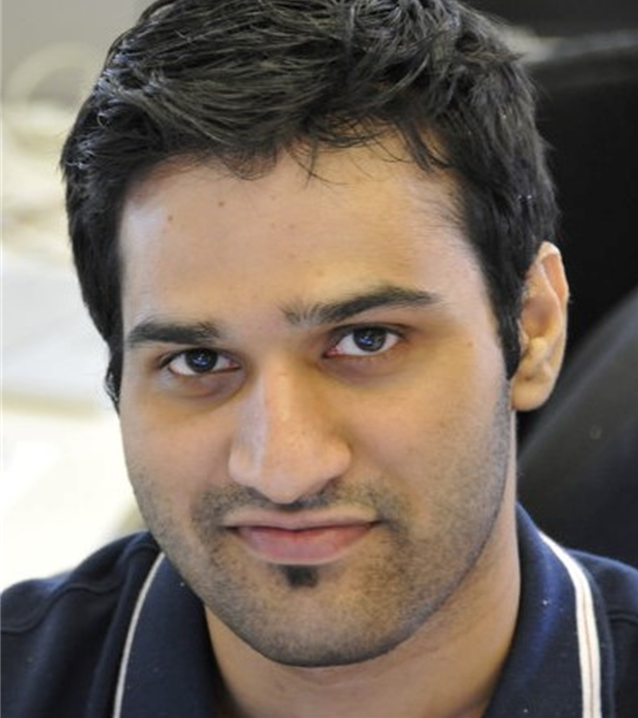

Leadership

Saket Mengle, PhD
Dr. Saket Mengle brings a unique combination of deep technical expertise and a passion for creating meaningful user experiences. With a PhD and years of research experience, Saket founded FableForge to bridge the gap between cutting-edge AI technology and practical, everyday applications that truly benefit people's lives.
Under Saket's leadership, FableForge is committed to building applications that prioritize user privacy, thoughtful design, and genuine utility. The company's approach combines rigorous technical standards with a human-centered design philosophy, ensuring that every product we create serves a real purpose and enhances the lives of our users.
With a background in advanced research and a vision for making AI more accessible and helpful, Saket guides FableForge in creating technology that feels less like a tool and more like a trusted companion. His commitment to excellence and user-centric design is reflected in every aspect of the company's work.
Saket believes that the best technology is invisible—it works so seamlessly that users can focus on what matters most: their own growth, reflection, and connection with others. This philosophy drives FableForge's mission to create applications that genuinely improve people's lives.